攝影器材介紹
相機種類
- 數位相機
- 單眼相機
- 運動相機
- 手機

數位相機
- 輕便
價格親民- 不可換鏡頭
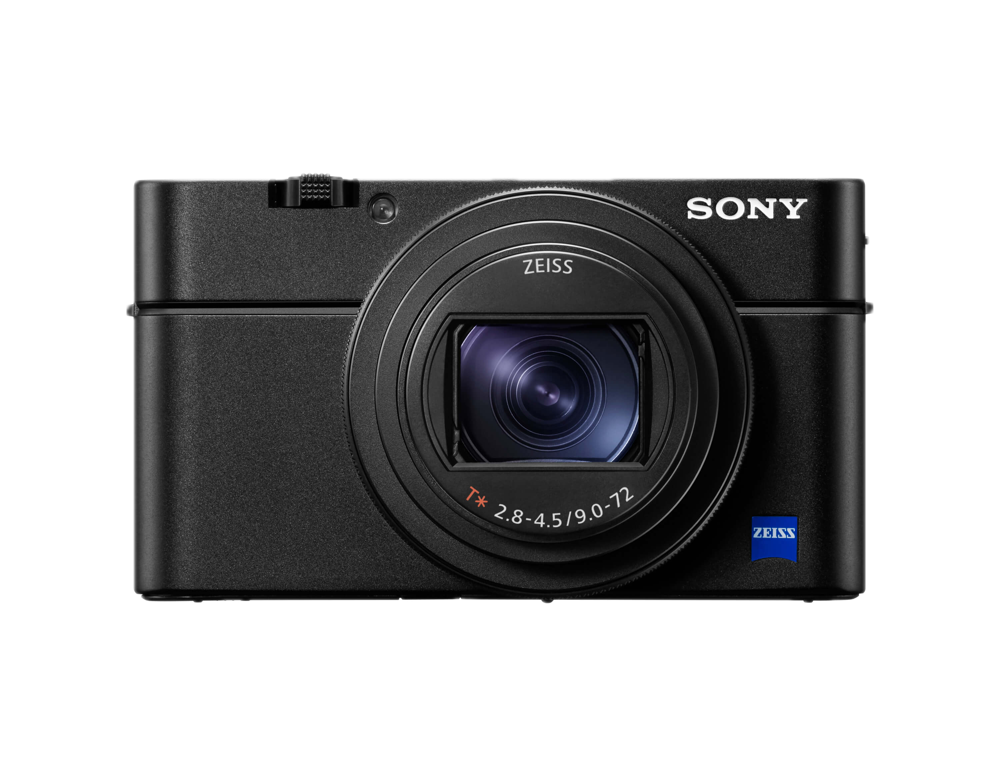
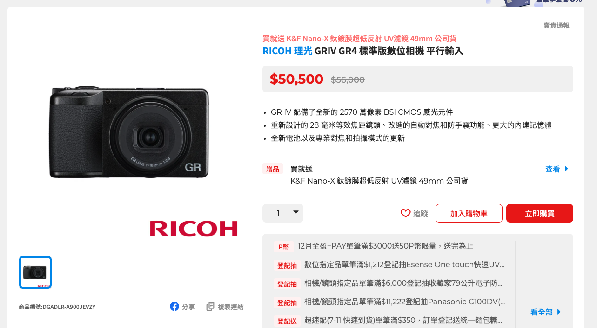
單眼相機
- 單眼相機
- 無反光鏡單眼相機
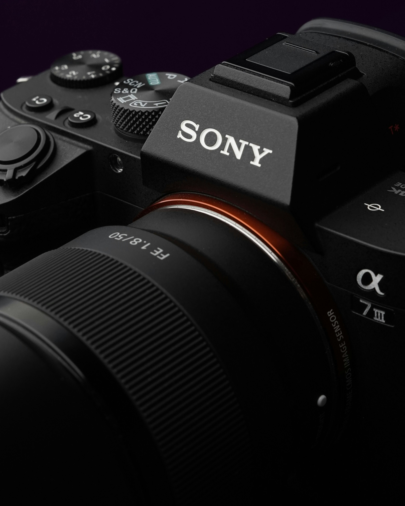
感光元件
依照尺寸大小分類
- 中片幅
- 全片幅
- 片幅
- M4/3
依照技術分類
- CMOS
- CCD
單眼相機特色
- 感光元件較大
- 可換鏡頭
- 各項功能通常較好
鏡頭
- 定焦鏡
- 變焦鏡
- 廣角：35mm以下
- 標準：35-70mm
- 望遠：70mm以上
- 微距鏡
- 旅遊鏡

鏡頭規格標示

- 卡口
- 焦段
- 光圈
- 種類
- 功能
Canon
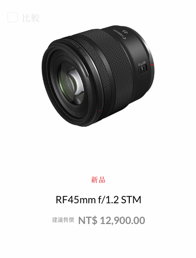
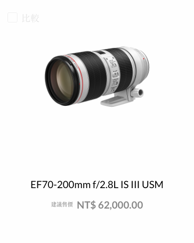
常見代號
- EF/RF：適用的卡口
- L：俗稱的L鏡，C家中的高級鏡頭，前端有紅色圈圈
- IS：光學防手震
- STM：步進對焦馬達
- USM：超音波馬達
- Marco：微距鏡
- Fisheye：魚眼
Sony
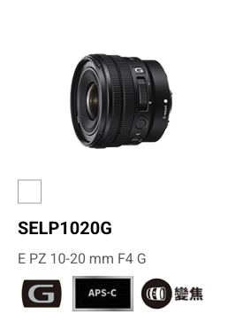
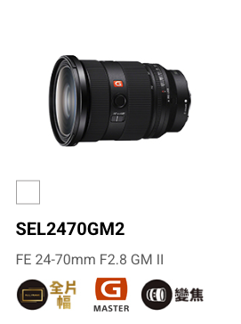
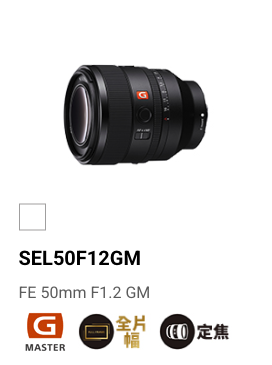
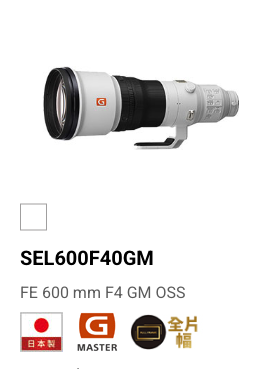
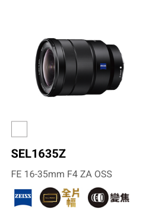
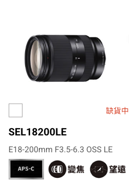
- E/FE：適用的卡口
- GM：俗稱GM鏡，S家的高規鏡頭，鏡頭上方會有橘色Logo
- ZA：蔡司鏡片
- G：規格次高的鏡頭
- OSS：光學防手震
- PZ：電動馬達
- SSM：超音波對焦馬達
運動相機
- 運動相機
- 360相機
- 拇指相機
- 其他
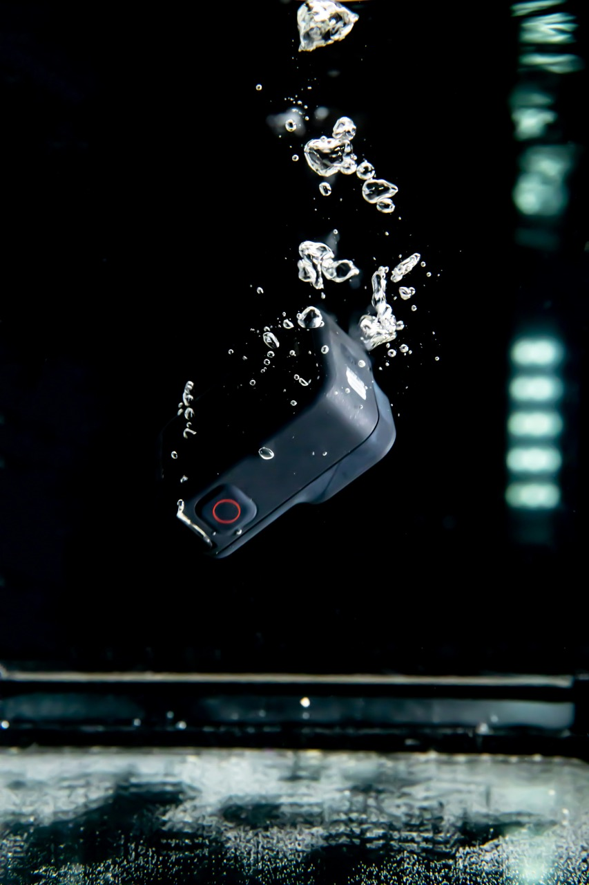

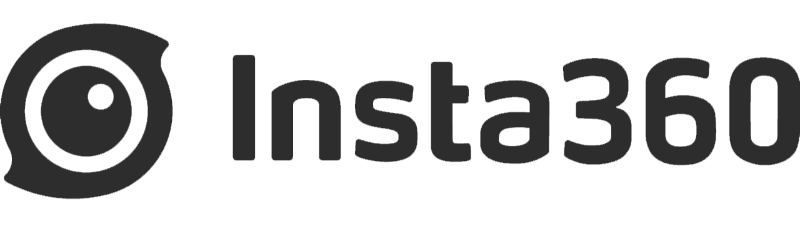
特性
- 防水防震
- 體積小
- 多配件支援
- 相對適合極端環境
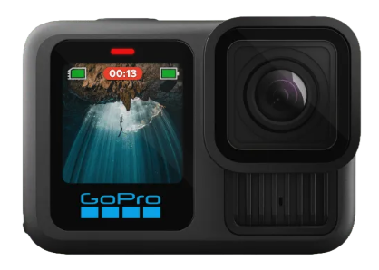
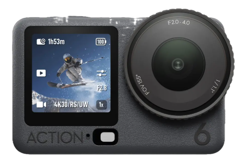
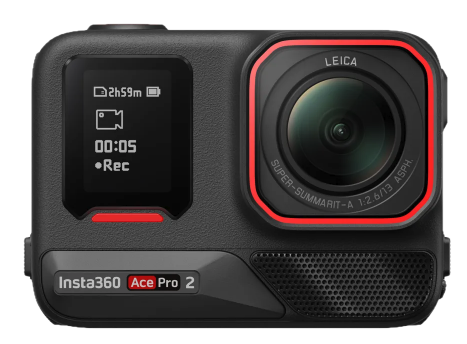
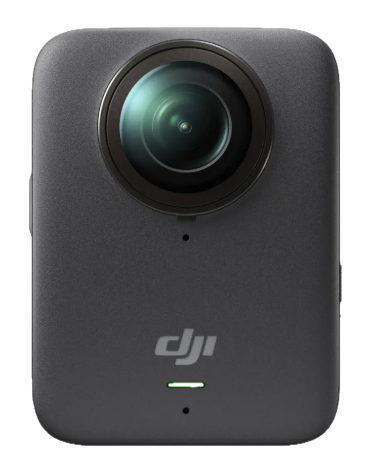
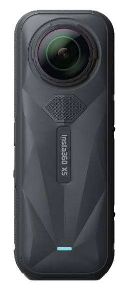
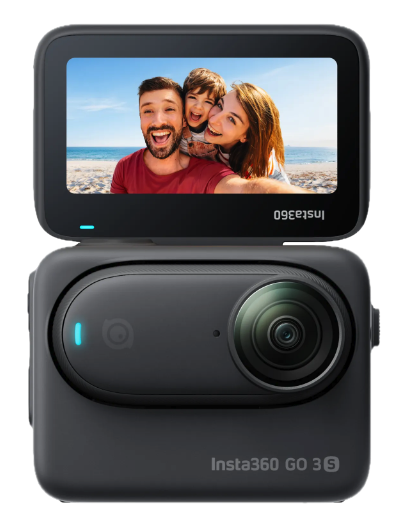
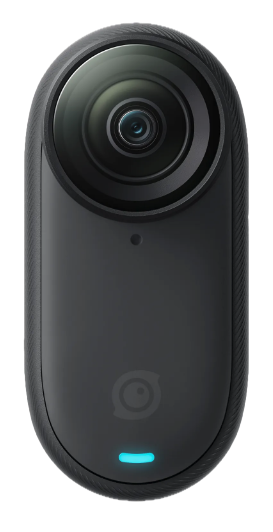
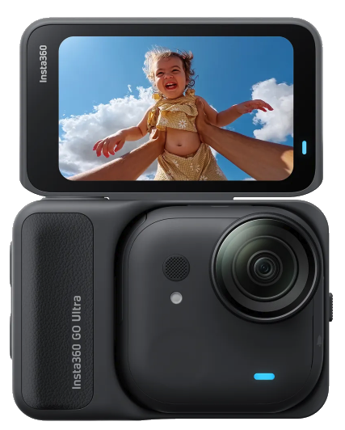
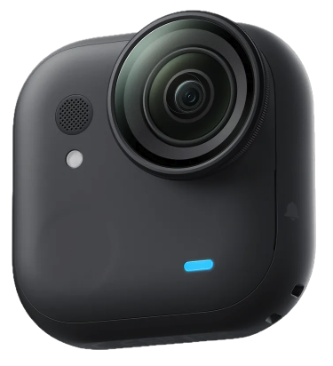
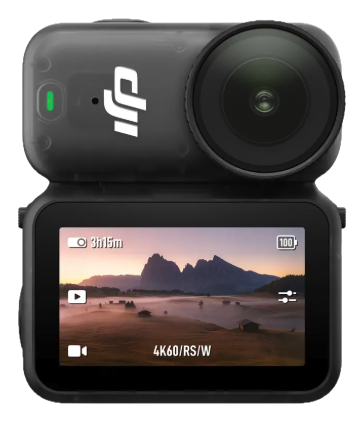
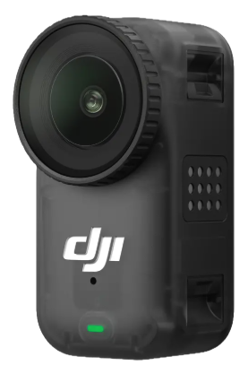
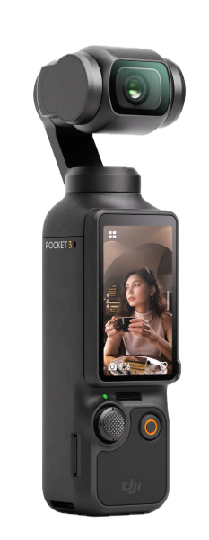
空拍機
會飛
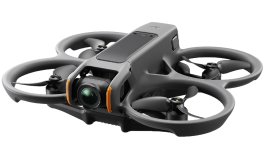
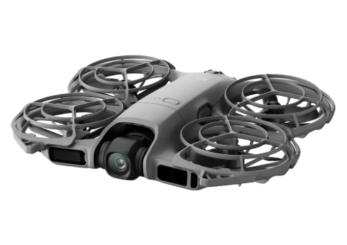
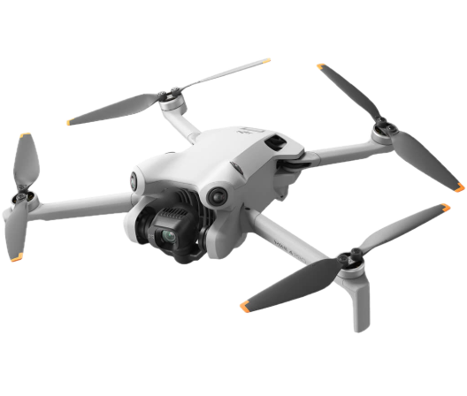
燈具
- 持續燈
- 閃光燈
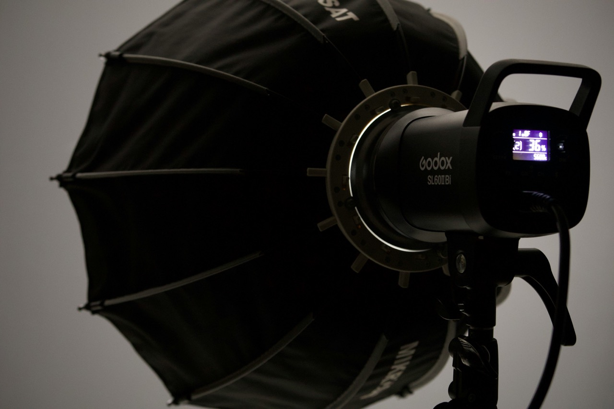
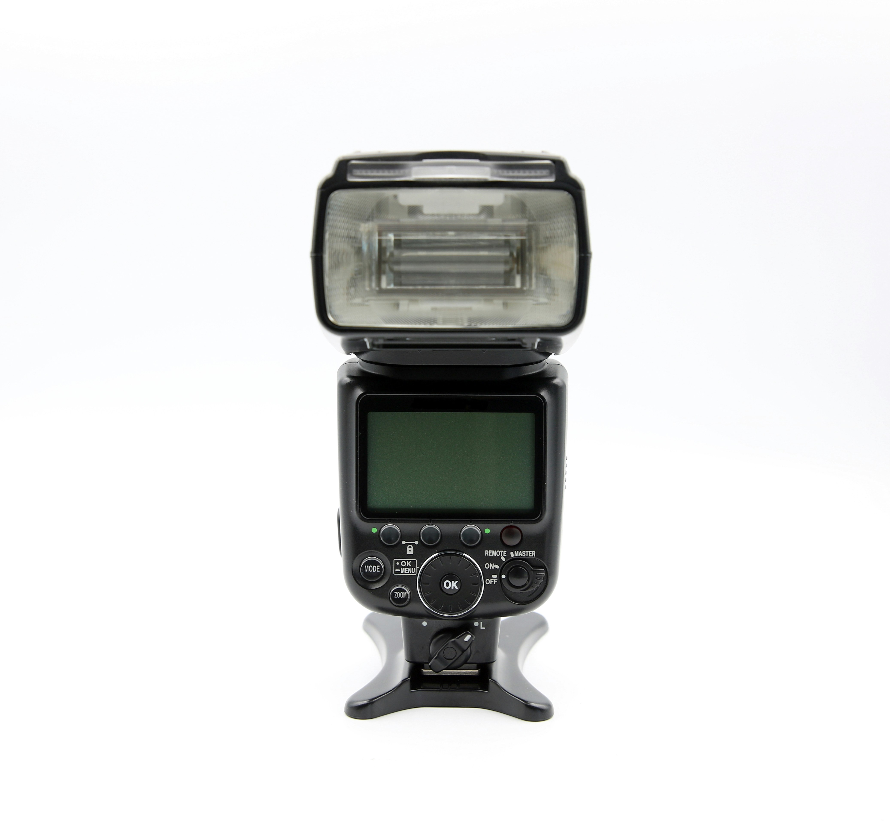
濾鏡
- UV保護鏡
- 偏光鏡（CPL）
- 減光鏡（ND）
- 黑柔
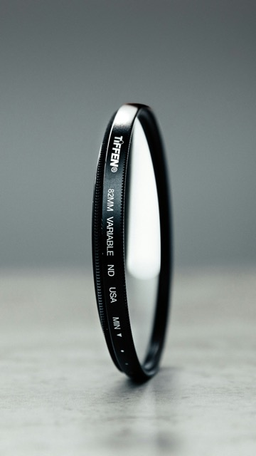
其他配件
- 柔光罩、柔光傘、柔光箱
- 反光板
- 背景架
- 燈架、腳架